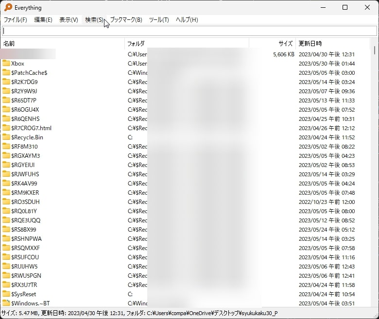
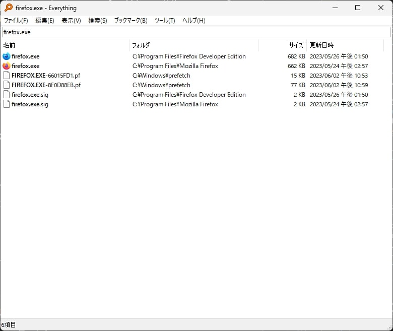

Everything
ファイルを検索するとき、windowsの標準ソフトでも検索は全然可能なのですが、
やってみるとすぐにわかりますが、結構時間がかかってしまい多くの方が不満に思う部分があると思います。
しかし、Everythingがあるとすぐに検索することができます！
1秒も待たずにです！
しかもUIがシンプルなのでおそらくどんな方でもすぐに使えると思います！
全体

検索後

ダウンロード
ダウンロードはここから！